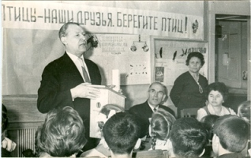
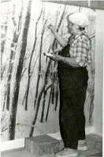

|  | В конце 1970-х – начале 1980-х гг. большое внимание начинает уделяться экологическому образованию и воспитанию населения. Создаются природоохранные общества и молодежные организации экологической направленности, издаются Красные книги. К пропаганде природоохранных и экологических знаний привлекаются музеи. В 1985-1990-е гг. после капитального ремонта была обновлена экспозиция всего музея краеведения. В отделе природы сотрудниками отдела, а также саратовскими и санкт-петербургскими художниками создаётся новая экспозиция. |
 |
| Выступление Р.А. Девишева, ст. преподавателя биофака СГУ, председателя секции охраны полезных птиц и зверей областного совета ВООП, на Дне птиц в музее. Фото 1960-х гг. | В.Г. Саморукова, художник-диорамист, за работой над витриной «Зимний лес» в зале № 4 отдела природы. Фото 1996 г. |
В основу её создания положен ландшафтно–экологический принцип. В экспозиции 8 классических диорам, которые являются моделями основных (типичных и редких) природных экосистем Саратовской области, расположенной в ландшафтах трёх природных зон. Созданию экспозиции предшествовали и сопутствовали совместные с учёными-краеведами экспедиции в лесостепную, степную и полупустынную зоны области. Экспозиция занимает 4 зала и имеет следующую тематическую структуру: «Страницы каменной летописи Саратовского края» (зал № 1), «География Саратовской области» (зал № 2), «Основные экосистемы в ландшафтах края, их компоненты и взаимосвязи» (залы № 2, № 3 и № 4). В 2007-2008 гг. отдел был частично обновлен, дополнен новыми экспонатами и техническими средствами. В выставочном зале № 5 в настоящее время экспонируется стационарная выставка «Природные раритеты» (виды флоры и фауны Саратовской области, внесённые в Красную книгу). Выставка была создана в 2009 г. в составе эколого – просветительного выставочного проекта «Спасти и сохранить».